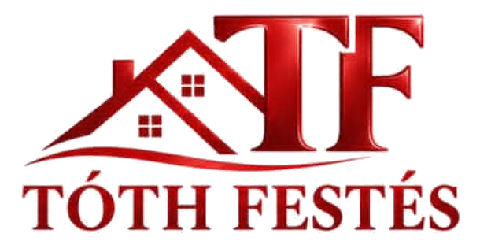

Beltéri festés
Ide írd a szolgáltatás leírását: mit vállaltok, milyen festékkel dolgoztok, hogyan zajlik a munka.
- Falak előkészítése, glettelés, csiszolás
- Alapozás és festés két rétegben
- Bútorok és padló védelme
- Takarítás a munka végén

Itt részletesen megtalálja, miben tudunk segíteni és láthatja referencia munkáinkat is.
Ide írd a szolgáltatás leírását: mit vállaltok, milyen festékkel dolgoztok, hogyan zajlik a munka.
Ide írd a szolgáltatás leírását: milyen épületeket festetek, milyen festékeket használtok.
Ide írd a szolgáltatás leírását.